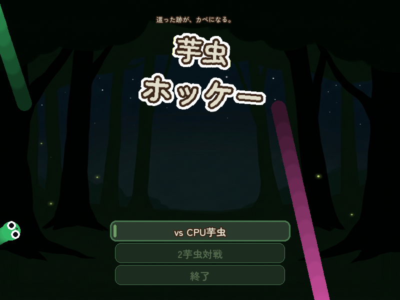

Python · pygame-ce · Game
芋虫ホッケー
這った跡が体節（壁）になる、2D エアホッケー。CPU 対戦・2 人対戦、ダッシュで壁をすり抜ける独自ルール。森テーマの UI とシネマティックな画面遷移を pygame-ce で実装しました。


PLAY
ブラウザ内プレイは未対応です。PC 向けに Python 版を公開しています（Windows なら exe ビルドも可）。
- GitHub リポジトリ を clone
pip install -r requirements.txtpython main.pyで起動
タイトル
- ↑↓ で選択 / Space で決定
- M: BGM / F: 全画面 / Esc: 終了
対戦
- P1: WASD + Shift ダッシュ
- P2: 矢印 + Shift
- 先取 3 点で勝利
ルールの要点
- 這うと体節が壁になる
- ダッシュ中は壁を出さず貫通
- 古い体節から消える